This section will walk you through the visualizer application use, specifically Volume Rendering and Slicing visualization techniques.
Open a data file
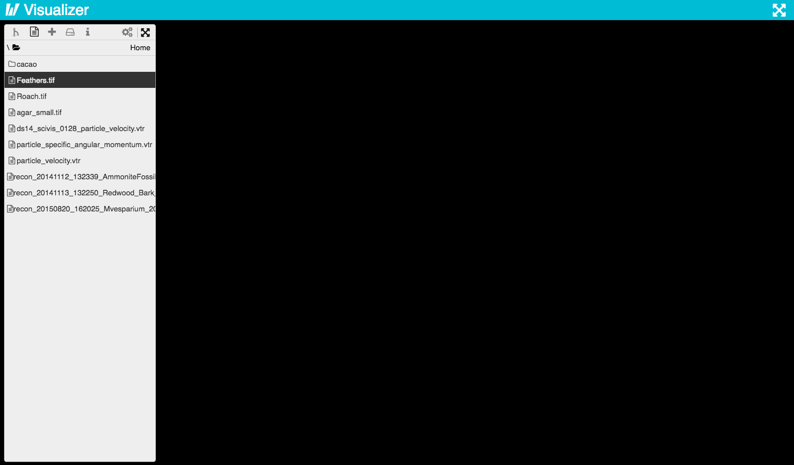
Choose a Representation
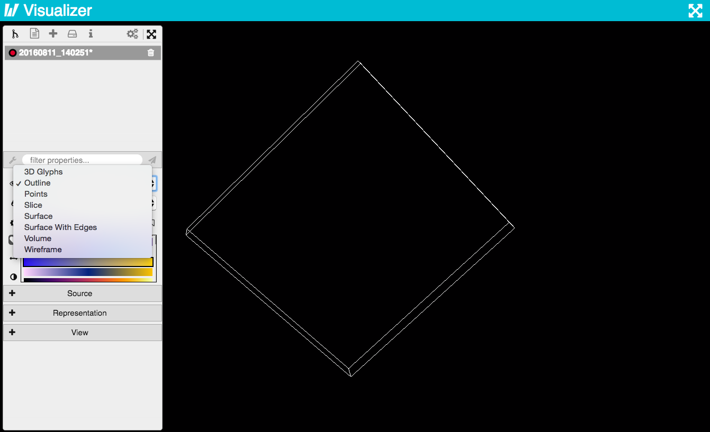
Choose a Data variable
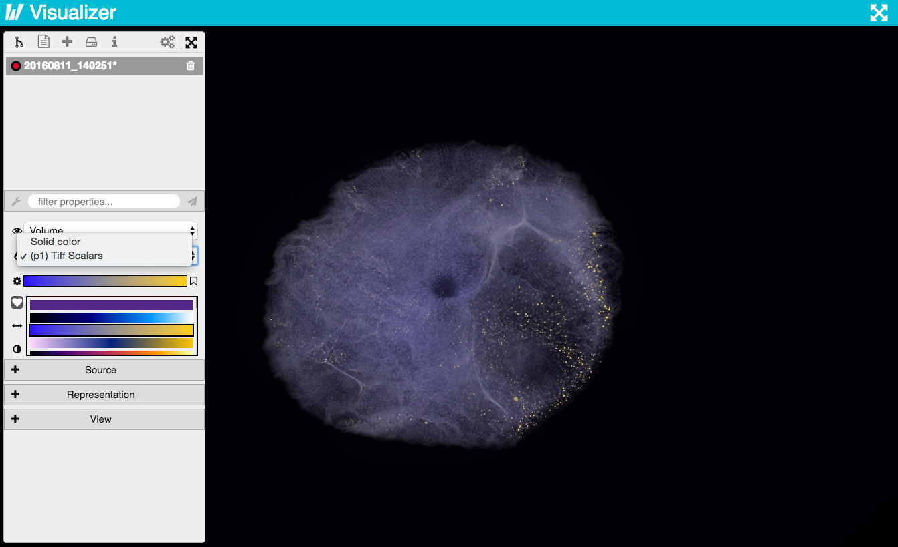
Rotate and Zoom
Reset Camera
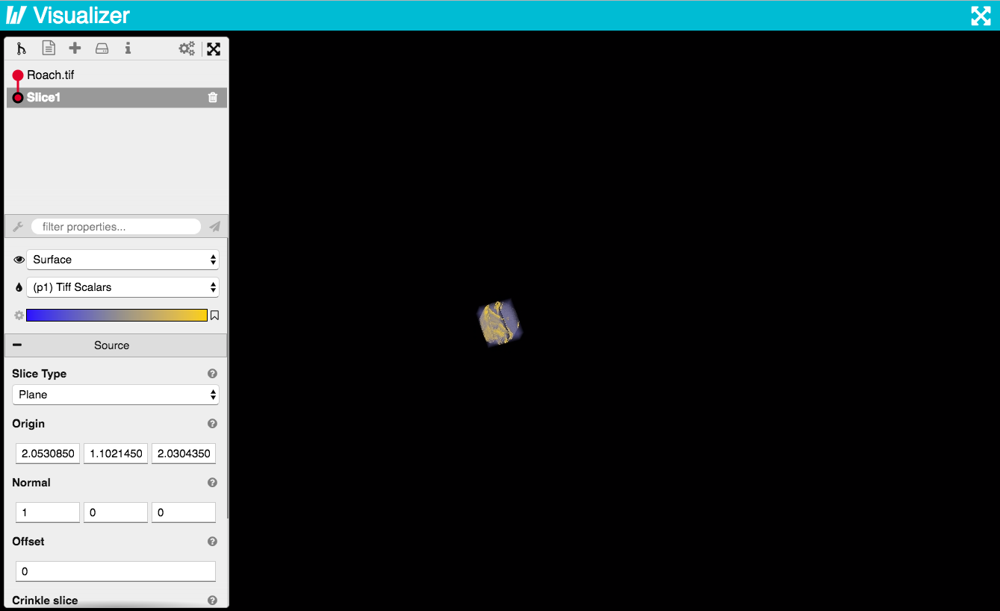
Now the fun Part! Choose Filters
Filter Options
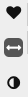
Choose a Color Preset
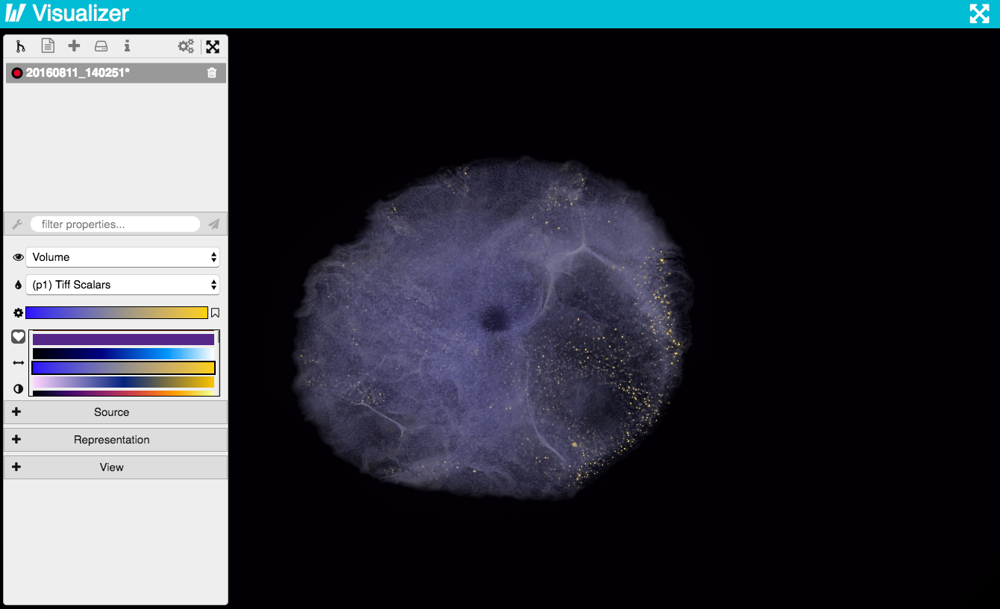
Set Color range
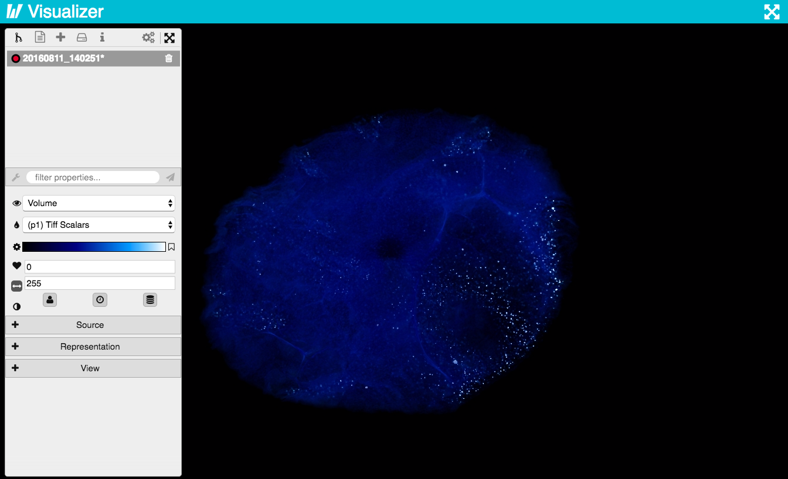
Color Scaling Range Autosets
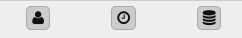
Set Opacity
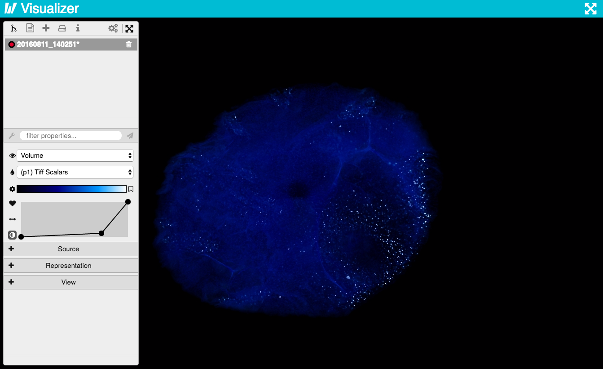
Add Points
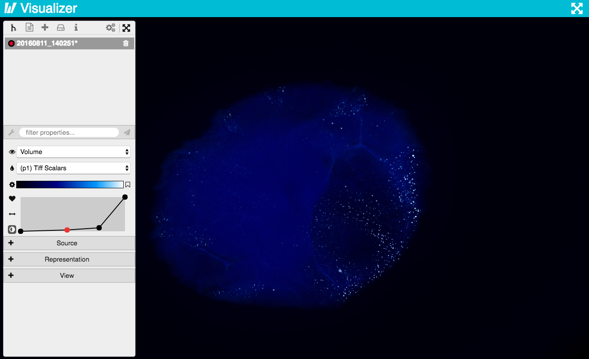
Add Slicing to Pipeline
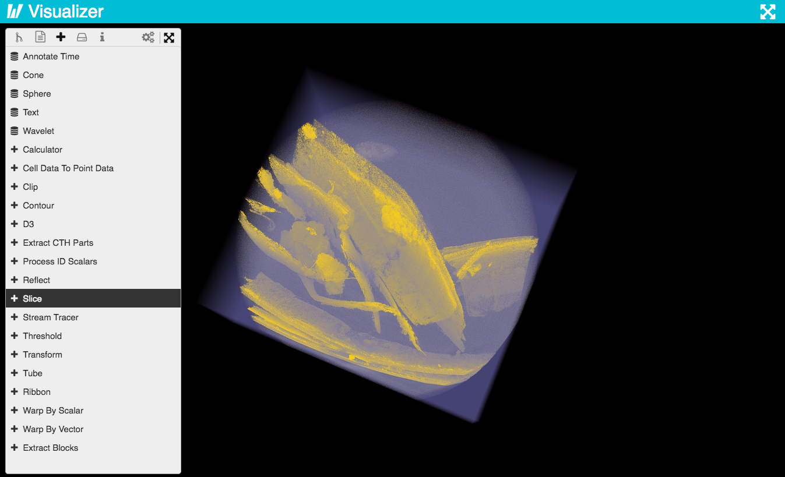
Enable Slice only
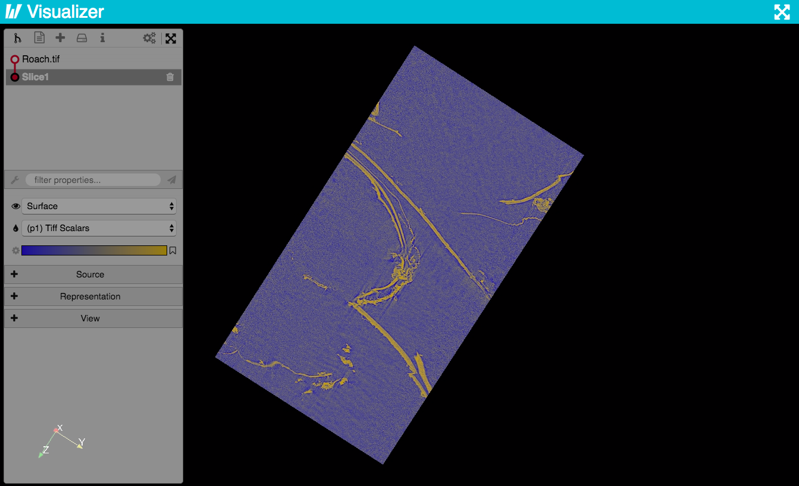
Select Slice type
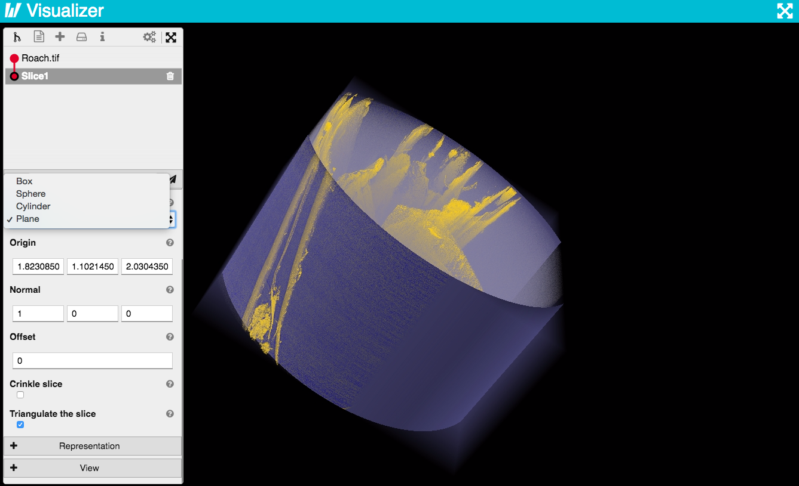
Set Slice co-ordinates
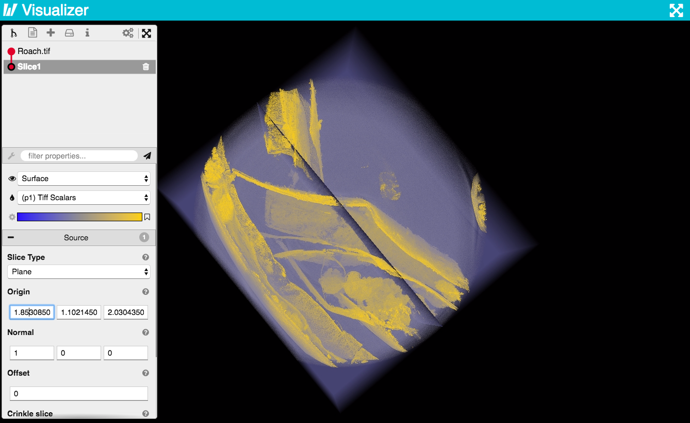
Update changes